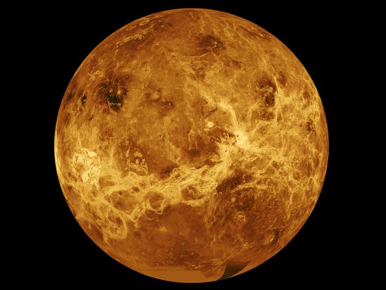

Venus is the second planet from the Sun and is the second brightest object in the night sky after the Moon. Named after the Roman goddess of love and beauty, Venus is the second largest terrestrial planet and is sometimes referred to as the Earth's sister planet due the their similar size and mass.
